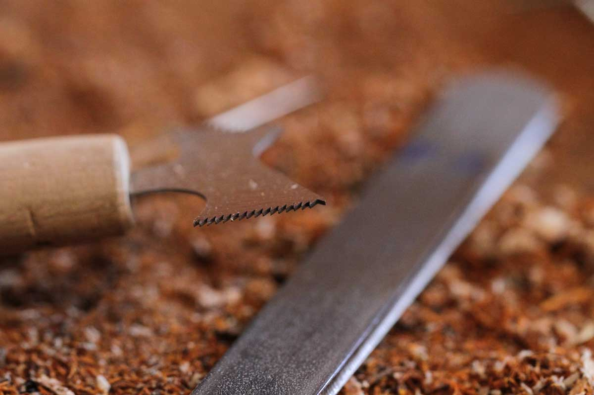
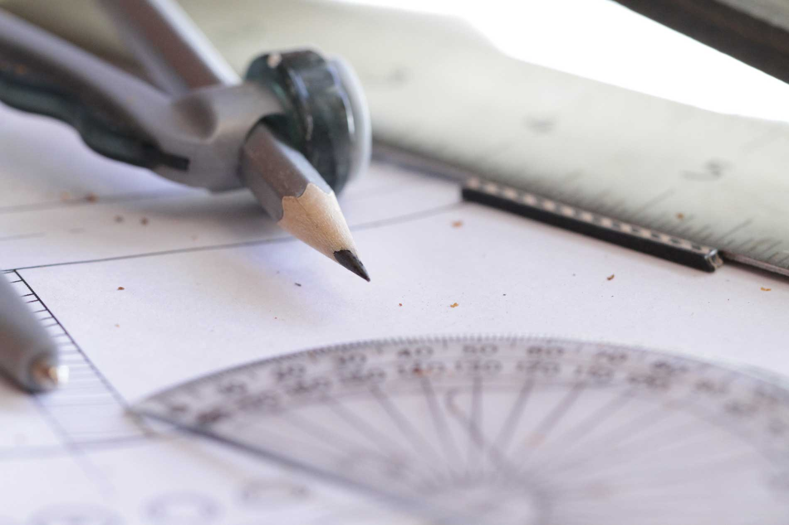

Step inside
Each guitar I make has its own special character. Unusual wood combinations and appointments give each of my guitars a unique look. Call me naive but I believe that if an instrument looks beautiful, it will sound beautiful. Each instrument I build sings it's own song.
Every couple if weeks I'll visit my local exotic wood supplier to look for interesting pieces. I'll rifle through all the stacks of wood looking for a board that speaks to me. I'll tap each board to listen for the "ring" I'm looking for. I draw inspiration From the beauty of this natural medium. Every species sounds, looks, smells, feels, and yes, tastes different and, even different pieces within a species are different. This ensures every instrument will have its own unique personality.
